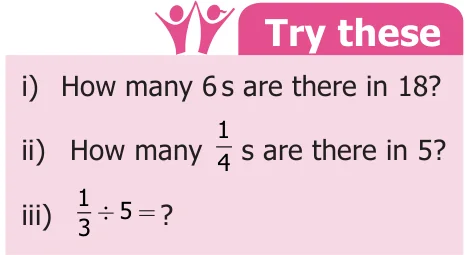

<!DOCTYPE html>
<html lang="en">
<head>
<meta charset="UTF-8">
<meta name="viewport" content="width=device-width,initial-scale=1">
<title>1.7 Division of Fractions — Fractions</title>
<meta name="description" content="Class 6 Mathematics · Term 3 · Fractions · 1.7 Division of Fractions">
<link rel="icon" href="data:image/svg+xml,<svg xmlns='http://www.w3.org/2000/svg' viewBox='0 0 100 100'><text y='.9em' font-size='90'>📘</text></svg>">
<link rel="stylesheet" href="../../../assets/book.css">
<link rel="stylesheet" href="https://cdn.jsdelivr.net/npm/katex@0.16.11/dist/katex.min.css" crossorigin="anonymous">
</head>
<body>
<header class="topbar">
<div class="topbar-in">
  <div class="crumb">
    <span class="c1"><a href="../../../index.html">Library</a> · <a href="../../index.html">Class 6 Mathematics · Term 3</a></span>
    <span class="c2">Fractions · 1.7 Division of Fractions</span>
  </div>
  <a class="tb-btn" data-nav="prev" href="../../01-fractions/07-multiplication-of-fractions-1.6/index.html" title="1.6 Multiplication of Fractions">←</a>
  <details class="drawer"><summary class="tb-btn" title="Sections in this chapter">☰</summary>
<div class="drawer-panel"><div class="dh">Fractions</div><a href="../01-chapter-opener/index.html">Chapter opener</a><a href="../02-intr7odu28ction-48-8-1.1/index.html">1.1 Intr7odu28ction 48 8</a><a href="../03-comparison-of-unlike-fractions-1.2/index.html">1.2 Comparison of Unlike Fractions</a><a href="../04-addition-and-subtraction-of-unlike-fractions-1.3/index.html">1.3 Addition and Subtraction of Unlike Fractions</a><a href="../05-improper-and-mixed-fractions-1.4/index.html">1.4 Improper and Mixed Fractions</a><a href="../06-addition-and-subtraction-of-mixed-fractions-1.5/index.html">1.5 Addition and Subtraction of Mixed Fractions</a><a href="../07-multiplication-of-fractions-1.6/index.html">1.6 Multiplication of Fractions</a><a href="../08-division-of-fractions-1.7/index.html" aria-current="page">1.7 Division of Fractions</a><a href="../09-ict-corner/index.html">ICT CORNER</a><a href="../10-exercise-1.1/index.html">Exercise 1.1</a><a href="../11-miscellaneous-practice-problems/index.html">Miscellaneous Practice problems</a><a href="../12-summary/index.html">Summary</a></div></details>
  <a class="tb-btn" data-nav="next" href="../../01-fractions/09-ict-corner/index.html" title="ICT CORNER">→</a>
  <button class="tb-btn" data-theme-toggle title="Toggle light / dark" aria-label="Toggle light or dark theme">◐</button>
</div>
<div class="progress"><span style="width:17.4%"></span></div>
</header>
<main class="wrap">
<div class="sec-head">
  <p class="eyebrow"><a href="../index.html">Chapter 1 · Fractions</a></p>
  <h1>1.7 Division of Fractions</h1>
  <p class="sec-meta">Textbook pages 15–18 · 9 figures</p>
</div>
<article class="prose">
<p>Think about the situation 1</p>
<p>A camp was organized in a school in which12 students participated. The camp leader wanted to divide them into groups of 2 students. How many groups were there?</p>
<figure class="fig table-fig wide"></figure>
<p>There were 6 groups which was got by the division of 12 by 2. That is \(12 \div 2 = 6\) which means there are six 2’s in 12.</p>
<p>If the camp leader distributes 6 litres of water in \(\frac{1}{2}\) litre water bottles to the students, then how many students will get water bottles? This means finding how many \(\frac{1}{2}\) litres are there in 6 litres. For this we need to calculate \(6 \div \frac{1}{2}\) . Solution Let us describe the situation</p>
<figure class="fig table-fig wide"></figure>
<p>This means that if you share 6 litres of water into 1 litre bottles, 6 persons can get water. If you share in \(\frac{1}{2}\) litre water bottles, 12 persons can get water. If you share it in \(\frac{1}{4}\) litre water bottles, 24 persons can get water. That is</p>
<figure class="fig table-fig"></figure>
<p>We can illustrate this in the following diagram. We divide each circle into halves such that each part is \(\frac{1}{2}\) of the whole. The number of such halves would be \(6 \div \frac{1}{2}\) . In the figure how many halves do you see? There are 12 halves. So \(6 \div \frac{1}{2} = \times =\) .</p>
<figure class="fig"></figure>
<p>As one circle has 2 halves, 6 circles will have 12 halves \(= 6 \times 2\). Therefore, \(6 \div \frac{1}{2} = 6 \times 2 =12\)</p>
<p>Here, we can observe that, dividing a whole number 6 by a fraction \(\frac{1}{2}\) is the same as multiplying a whole number 6 by 2, where 2 is the reciprocal of \(\frac{1}{2}\) . Generally, dividing a number by a fraction is the same as multiplying that number by the reciprocal of the fraction. Let us discuss the same situation in another way. Let us take a bar of length 12 cm How many 2 cm bars are there in a 12 cm bar?</p>
<figure class="fig table-fig wide"></figure>
<aside class="sidenote"><p>bars</p></aside>
<p>Now find how many \(\frac{1}{2}\) cm bars are there in a 12 cm bar?</p>
<figure class="fig table-fig wide"></figure>
<aside class="sidenote"><p>bars</p></aside>
<p>Let us observe and complete the following:</p>
<ul class="qlist">
<li><span class="mk">i)</span><span class="lt">\(\frac{3721}{7321} \times = =1\) ii) \(\frac{19}{99} \times 9 = =1\) iii) \(8 \times \frac{18}{88} = =\) ? iv) \(134 \times\) ? =1 v) \(\frac{4}{3} \times\) ? =1</span></li>
</ul>
<p>From the above, we can see that the Product of a fraction and its reciprocal is always 1. Example 19 Kandan shares \(\frac{1}{2}\) piece of a cake between 2 persons. What will be the share of each? Solution To know the share, we need to find \(^{1}_{2} \div 2\)</p>
<div class="mathblock"><p>\(^{1}_{2} \div ^{2} = ^{1}_{2} \times ^{1}_{2}\) (reciprocal of 2 is \(\frac{1}{2}\) )</p><p>\(= 1 \times 1 = 1 \times 1 = 1 2 2 2 \times 2 4\)</p></div>
<figure class="fig side-fig"></figure>
<p>Example 20 Divide 4 1_{2} by \(3 \frac{1}{2}\)</p>
<div class="mathblock"><p>Solution \(4 1 \div 3 1 = 9 \div 7\)</p></div>
<p>\(\frac{92}{27}\) (reciprocal of \(\frac{7}{2}\) is \(\frac{2}{7}\) )</p>
<p>\(= \times\)</p>
<div class="mathblock"><p>\(\frac{9}{7}\)</p></div>
<p>Example 21  An oil tin contains How many bottles are required to fill \(7 1^{2}\) litres of oil which is poured in 7 1_{2} litres of oil? \(2 1^{2}\) litres bottles. Solution The number of bottles required \(= ^{15}_{2} \div 5_{2} = \frac{152}{25}\) ´ (reciprocal of \(\frac{5}{2}\) is \(\frac{2}{5}\) )</p>
<div class="mathblock"><p>\(= 3\) bottles</p></div>
<p>Example 22 A rod of length 6m is cut into small rods of length 1 1_{2} m each. How many small rods can be cut?</p>
<h4 class="callout-h" id="s-solution">Solution</h4>
<p>The number of small rods \(= 6 \div 1 1_{2}\) Try these \(= 6 \div \frac{3}{2}\) i) ii) Find the value of Simplify: \(1 ^{1}_{2} \div 1_{2} 5 \div 2 \frac{1}{2}\) . \(= ^{6}´ \frac{2}{3}\) (reciprocal of \(\frac{3}{2}\) is \(\frac{2}{3}\) ) iii) Divide \(8 \frac{1}{2}\) by 4 1_{4} .</p>
<div class="mathblock"><p>\(= 4\) rods</p></div>
<h2 id="s-fractions">Fractions</h2>
</article>
<nav class="pager"><a class="" data-nav="prev" href="../../01-fractions/07-multiplication-of-fractions-1.6/index.html"><span class="dir">← Previous</span><span class="t">1.6 Multiplication of Fractions</span><span class="ch">Fractions</span></a><a class="nx" data-nav="next" href="../../01-fractions/09-ict-corner/index.html"><span class="dir">Next →</span><span class="t">ICT CORNER</span><span class="ch">Fractions</span></a></nav>
</main><footer class="site">Generated from the source textbook PDFs · text, figures and exercises belong to their respective publishers.</footer><script defer src="https://cdn.jsdelivr.net/npm/katex@0.16.11/dist/katex.min.js" crossorigin="anonymous"></script>
<script defer src="https://cdn.jsdelivr.net/npm/katex@0.16.11/dist/contrib/auto-render.min.js" crossorigin="anonymous"
  onload="renderMathInElement(document.body,{delimiters:[
    {left:'\\(',right:'\\)',display:false},
    {left:'$$',right:'$$',display:true},
    {left:'\\[',right:'\\]',display:true}],throwOnError:false,ignoredTags:['script','noscript','style','textarea','pre','code']})"></script>
<script src="../../../assets/book.js"></script>
</body>
</html>
